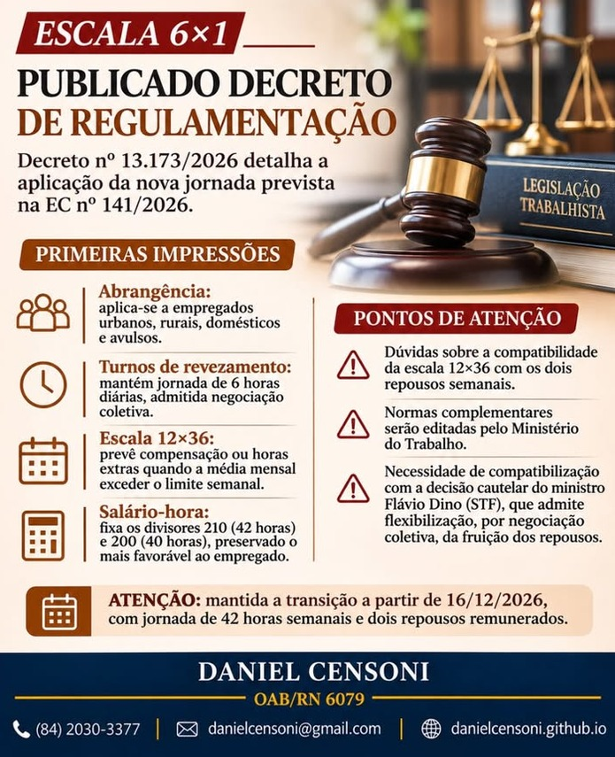

Publicado hoje (19/11), o Decreto nº 13.173/2026 regulamenta aspectos da EC nº 141/2026, que reduz a jornada de trabalho e garante dois repousos semanais remunerados.
Primeiras impressões
- Abrangência: o texto alcança empregados urbanos, rurais e domésticos, além dos avulsos, no que couber.
- Turnos de revezamento: permanece a regra de seis horas diárias, admitidas condições distintas mediante negociação coletiva.
- Escala 12×36: o decreto prevê compensação ou horas extras quando a média mensal ultrapassar o limite semanal constitucional. Mas permanece a dúvida: como assegurar os dois repousos remunerados nesse regime?
- Salário-hora: são fixados os divisores 210 para 42 horas semanais e 200 para 40 horas, preservado o divisor mais favorável ao empregado.
- Regulamentação futura: o Ministério do Trabalho editará regras sobre repousos e jornadas especiais.
E o que diz a decisão de Flávio Dino?
A liminar permitiu flexibilizar, por negociação coletiva, a época de fruição dos repousos, sem eliminar o direito às duas folgas. Também fez apelo ao Congresso para disciplinar regimes diferenciados.
Daí surgem questões relevantes: até onde pode ir um decreto ou uma portaria ao disciplinar esses regimes? Como compatibilizar a referência ao mês-calendário com a flexibilidade reconhecida pelo STF?
Não se trata de afirmar, desde já, a invalidade do decreto, mas de apontar zonas de possível controvérsia jurídica.
Atenção: permanece o início da transição em 16/12/2026, com 42 horas semanais e dois repousos remunerados. O julgamento no STF ainda não está concluído.
Empresas devem revisar escalas e instrumentos coletivos com orientação jurídica, evitando adaptações precipitadas.
Agende sua consulta: (84) 2030-3377 · danielcensoni@gmail.com